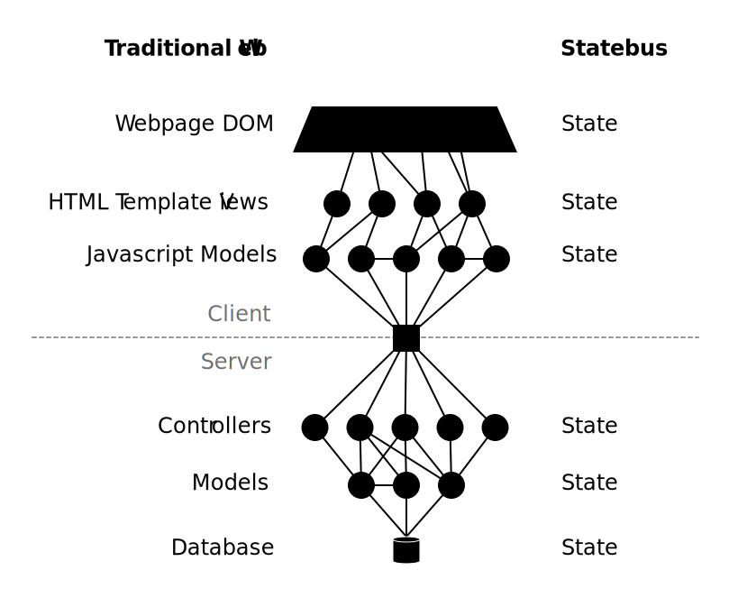

Every web page has an openly accessible URL,
but the state within pages are
proprietary. Statebus allows ______ __ _______ by
extending HTTP in three ways. First, it gives each
piece of internal state a URL. Second, it allows any
state to depend upon any other state. Third, it provides a
guarantee that all fetched state will automatically update when
its dependencies change. This makes it easier to develop
websites, and encourages sharing state across websites and other
computers.
Statebus makes three extensions to HTTP:
Each piece of state has a URL, not just each page (or file).
A piece of state can depend on other pieces of state, with links to their URLs
Each state is automatically promised to be updated when it or its dependencies change
These three changes let you construct websites out of many layers of
state that are interdependent, and all update together,
automatically, even across other websites, over the network, or
anywhere, as long as they obey the statebus protocol.
And we can build a whole website as a set of reactive
layers. Using the web protocol, rather
than implementing the web protocol on the outside with a
bunch of proprietary gunk on the inside.

Each of these black circles is a piece of state. For instance,
each controller in Rails returns a piece of JSON
state, which depends on the state of a model, which depends
on the state of the database. In Rails, you'd use a different API
for a controller than you would for a model. But with statebus,
each piece of state has a uniform interface; each
has URL, and each depends on the state below, linked
with black lines in the diagram.
Examples
Let's start at the top of the stack, and make a page that renders
from state. We've written a handy single-file programming system,
because statebus lets you decouple nodes of state. Here we have
implemented a whole blog web app within a single html
file, decoupled from a server.
<script type="statebus">
dom.BODY = ->
blog = fetch('state://stateb.us/<yourname>/blog')
DIV
for post in blog.posts
DIV
H1 post.title
DIV post.body
#</script><script src="https://stateb.us/client.js"></script>
Statebus is backwards-compatible
with HTTP, and we have implemented a number of wrappers
to make compatibility consistent. The first and last lines are a
wrapper that lets you implement a whole statebus web app within a
single html file, decoupled from a server.
If you put this into a .html file on your laptop,
and then double-click it to open in a web browser (you'll see
a file:///URL), you'll see a
working statebus blog, in a single html
file!
It'll be empty until you add some content though. Open your
browser's console and run:
Notice how the app automatically updated as soon as you ran that
line? And reload the page, now you'll see it persists. That state
is saved to the
URLstate://stateb.us/<yourname>/blog,
and will persist as you reload. And if there are other people
saving that state, you'll all share the same state since you share
that URL, and see each change to same state together
simultaneously.
Diff/Patch API
The differential synchronization API can be just a simple extension to the
current API. You can register a normal reactive
function like you do now, which won't receive diffs. It'll receive
the new state.
To receive diffs, we'll make a new API that lets you
register handlers for each type of diff event:
If there is a handler registered for diff operations on a piece
of state, then statebus will automatically know to hold onto a
shadow copy of that state, and diff it every time there's an update
in order to send out the patch operations to the registered handler.